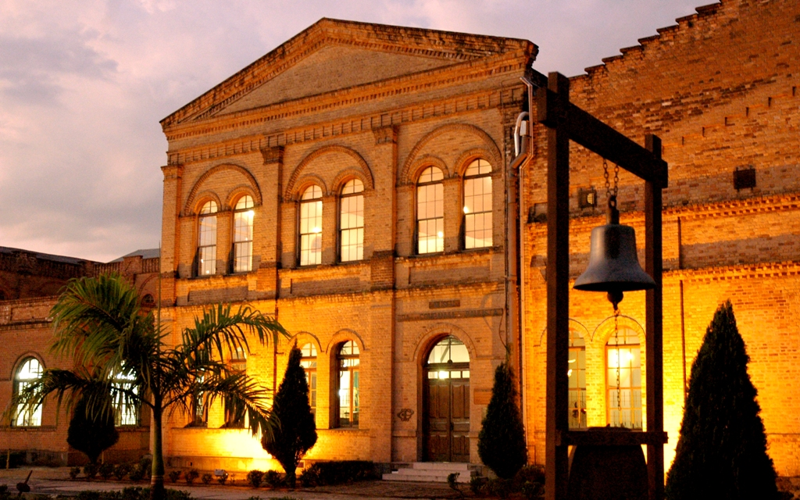

Jundiaí
Terra da Uva e do Desenvolvimento
História
O nome Jundiaí vem do tupi e significa “rio dos jundiás” (um tipo de peixe). A cidade foi fundada em 14 de dezembro de 1655, por Rafael de Oliveira, às margens do Rio Jundiaí.
Durante os séculos XVII e XVIII, a cidade se destacou pela agricultura. No século XIX, com a chegada da Estrada de Ferro Santos–Jundiaí, tornou-se um importante polo de ligação entre o interior paulista e o Porto de Santos. Já no século XX, ganhou força como centro industrial e logístico.
Hoje, Jundiaí é considerada uma das cidades mais desenvolvidas do Brasil, com excelente qualidade de vida.
Pontos turísticos
Jundiaí combina tradição histórica com lazer moderno e natureza preservada:
• Serra do Japi – área de preservação ambiental e um dos últimos grandes remanescentes de Mata Atlântica do interior paulista.
• Museu Histórico e Cultural de Jundiaí (Solar do Barão) – preserva a memória da cidade.
• Igreja Matriz de Nossa Senhora do Desterro – construída no século XVII, marco do centro histórico.
• Teatro Polytheama – inaugurado em 1911, referência cultural da região.
• Adegas e vinícolas – destaque para a Rota da Uva, com degustações e turismo rural.
• Parque da Cidade e Jardim Botânico – áreas verdes para lazer e contato com a natureza.
Curiosidades
• Jundiaí é conhecida como a Terra da Uva, devido à produção de uvas finas e pela famosa Festa da Uva, realizada desde 1934. • Possui um dos melhores IDHs do Brasil, com forte economia e qualidade de vida. • É considerada referência em sustentabilidade e preservação ambiental, principalmente por sua política de conservação da Serra do Japi. • Já foi chamada de “Manchester Paulista”, pelo seu desenvolvimento industrial no início do século XX. • Está estrategicamente localizada entre São Paulo e Campinas, sendo polo logístico do estado.
Cultura e Gastronomia
A cultura de Jundiaí é marcada pelas festas tradicionais, como a Festa da Uva e Expo Vinhos, que celebram a imigração italiana e a tradição vitivinícola.
Na gastronomia, a cidade é conhecida pelas adegas familiares e cantinas italianas, que oferecem vinhos artesanais, massas e pratos típicos. Além disso, possui bares e restaurantes modernos, refletindo sua mistura de tradição e modernidade.
Voltar